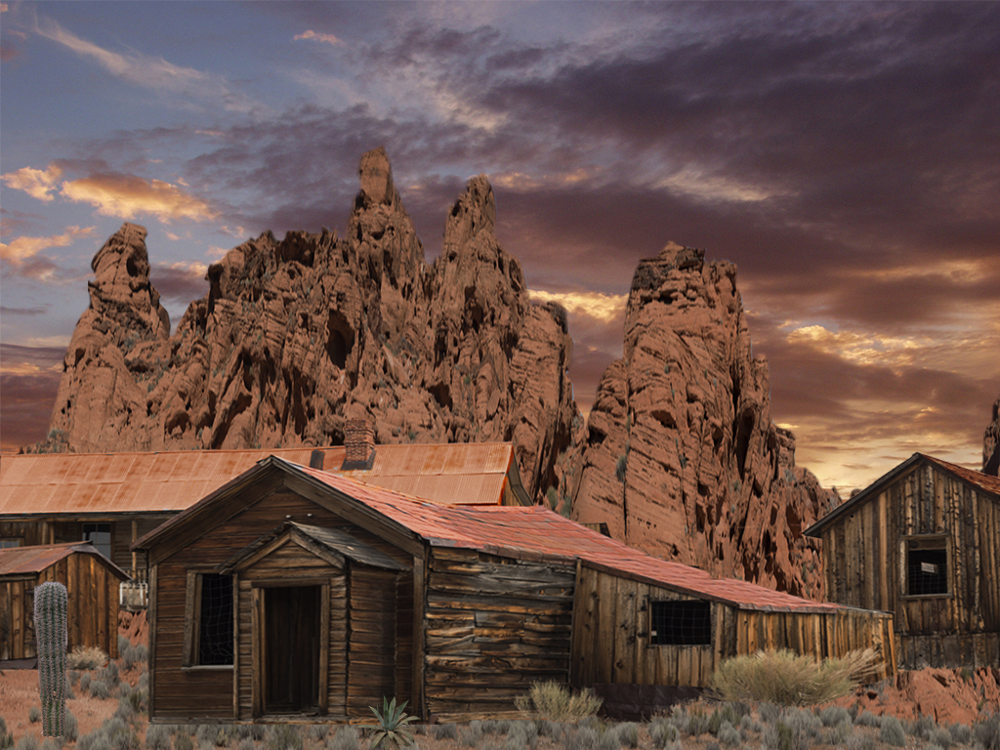
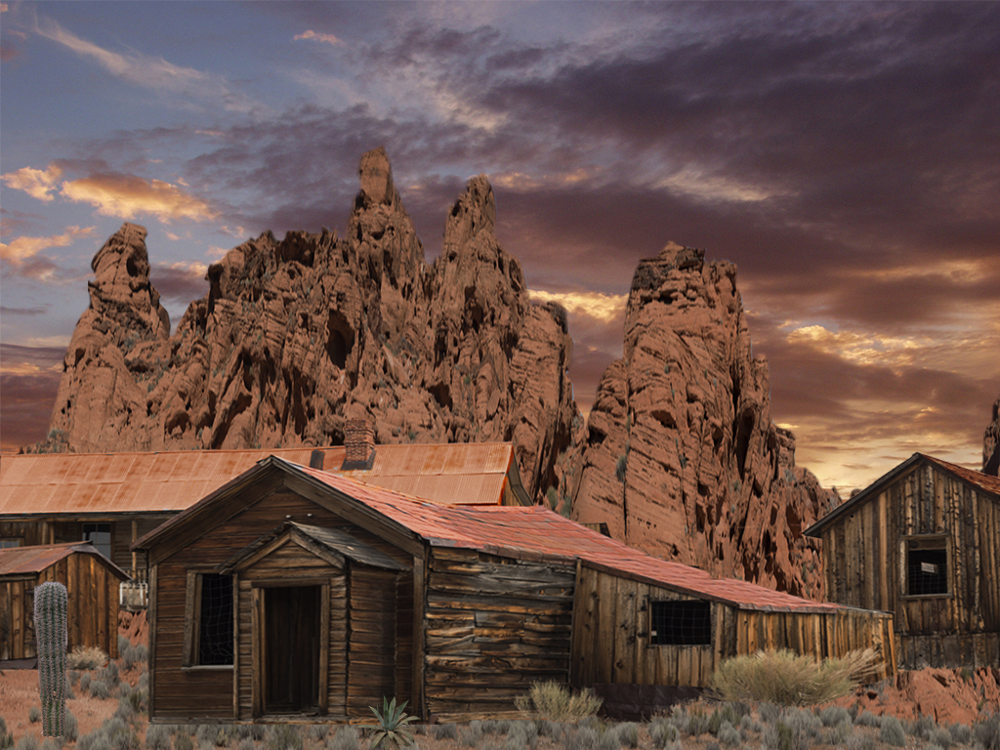

My name is Luciano Maximilian Suarez, I prefer to be called Max. I live in Durham North Carolina and I am studying Computer science with an emphasis on Simulation and Game Development at Wake Technical Community College. I am looking for a job as a video game developer because I enjoy playing video games and they inspire me to be creative, slolve puzzles, and tell stories. I have worked with Photoshop and SketchUp in my SGD Class, I've worked on Unreral Engine and Unity tutorials.
 

These are the projects I have worked on using SketchUp and Photoshop. The first one is a Log Cabin that I made in Sketchup and the second one is an icon of a gun that I made in Photoshop, and finally the third one is a scene of a desert that I created in Photoshop. These are my best works of art that I made in Photoshop for my SGD art class.
Email: LucianoMaxSuarez@gmail.com
Phone: (919)489-2463